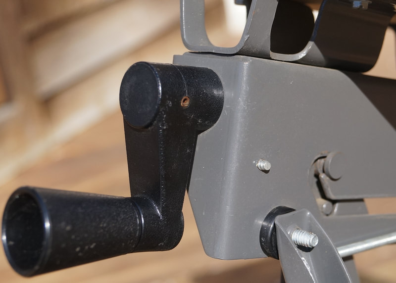
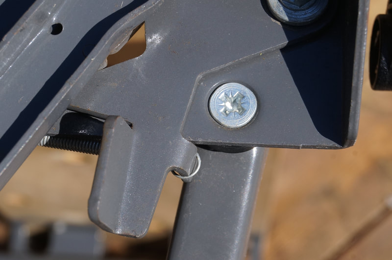
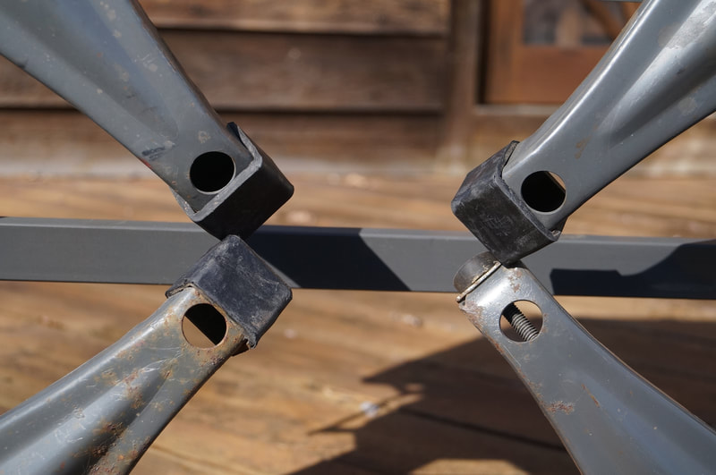
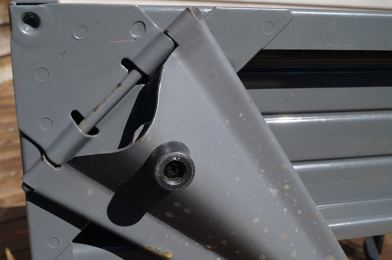
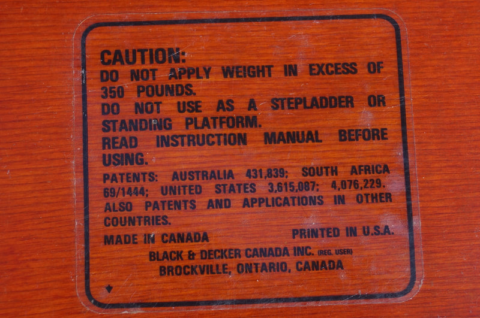
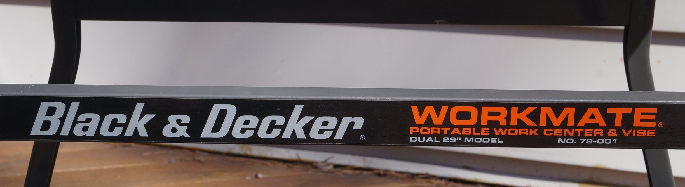
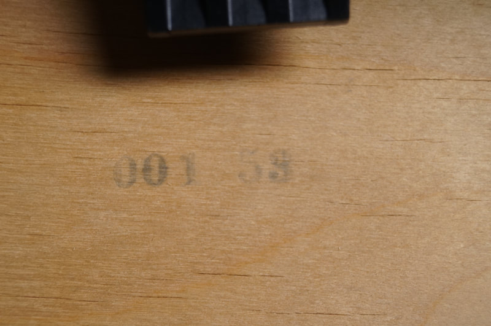
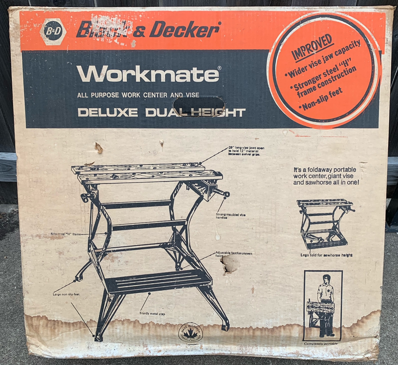
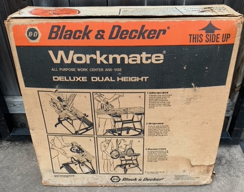
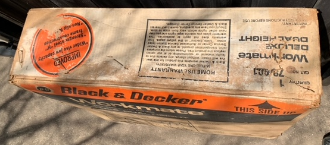

How to Recognize It
The steel H-frames, single-layer jaws, steel top-latch levers, and one screw-in leveler foot plus three slip-on rubber boot feet on the legs identify a Type 7.
See the gallery of detail photos below. The Workmate 79-001 Type Study spreadsheet shows how all ten Types compare.
Black & Decker Workmate 79-001 Type 7
The 79-001 Type 7 is nearly identical to the Type 6. The changes between them are so minor that it's not at all clear why Black & Decker gave it a different Type number.
Notable Characteristics
The changes made during the run of the Type 6 became standard on the Type 7:
Component Changes During Production
All dates given below are approximate.
Notable Characteristics
The changes made during the run of the Type 6 became standard on the Type 7:
- The friction hinge for the legs
- The Caution label on the jaws with two United States patent numbers
- The plastic top-release levers changed back to the original steel ones with coil springs that were used on the Type 1, Type 2, and Type 4. This is the only instance where the 79-001 reverted to a component used earlier. On the Type 7 the levers are attached differently, using the hex head screw that was used with the plastic levers.
- The plastic vise handles and arms changed from a smooth finish to a lightly textured finish.
Component Changes During Production
All dates given below are approximate.
- November 1979 - Less than two months into production the markings changed, most visibly with a slightly different label on the crossbar of the H-frame. This label carries the new official terminology for the multiple models of Workmate on the market by then: "Portable Work Center & Vise". In addition, the 79-001 is no longer called the “Deluxe Dual Height”, but now the "Dual 29” Model". This change came about because by 1980 Black & Decker had added the 79-009, a second, slightly smaller, dual-height Workmate called the "Dual 27” Model". Also, the Type number was no longer stamped in ink on the lower surface of the jaw. Instead, there is a small rectangular white-on-black sticker with the model and Type number applied to the inner face of one of the upper frame pieces that support the jaws.
- April 1980 - A new material was introduced for the jaws—oak veneer over what appears to be a cheaper but slightly thicker plywood, with fewer, thicker plies, down to 9 plies from the previous 17. From this point on, almost all 79-001's had jaws of either this oak plywood or veneered MDF.
Click on any image below to open the gallery of full-screen images.






















